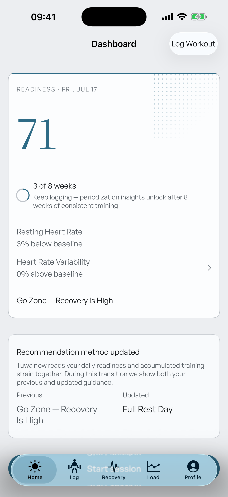
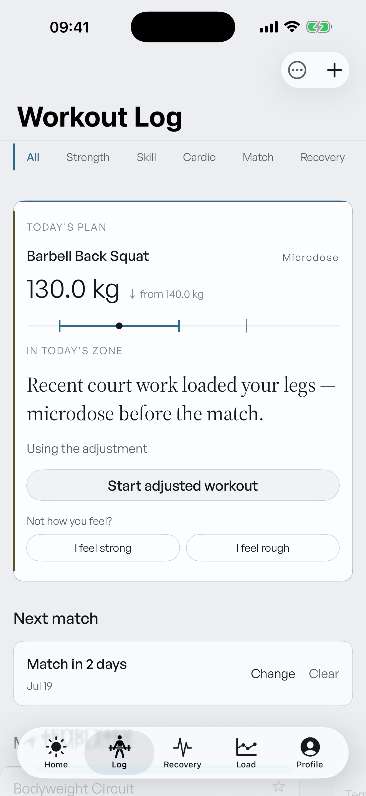
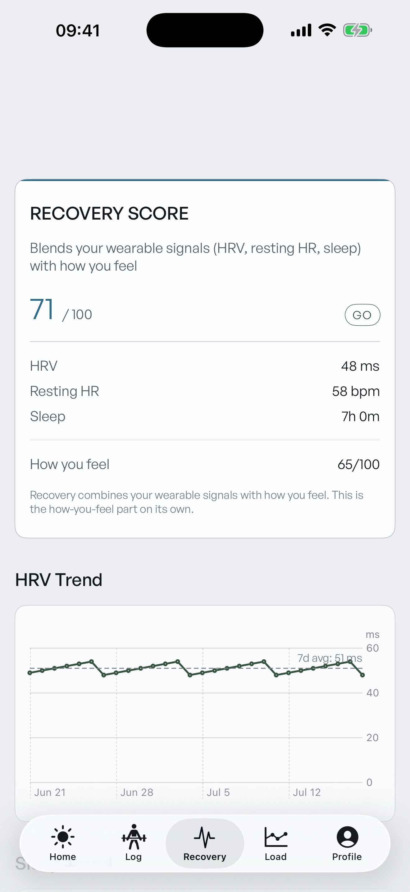
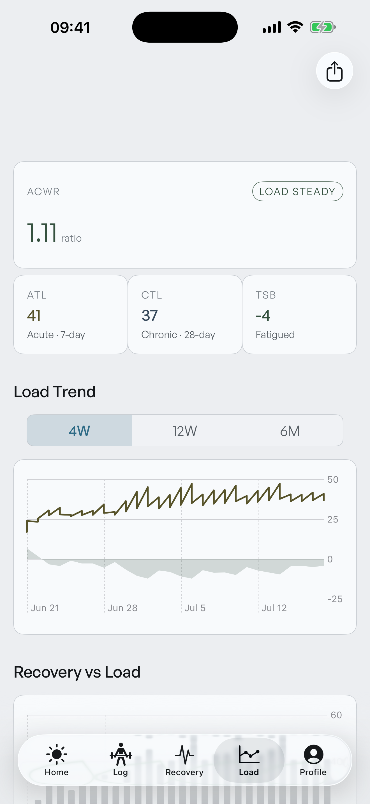
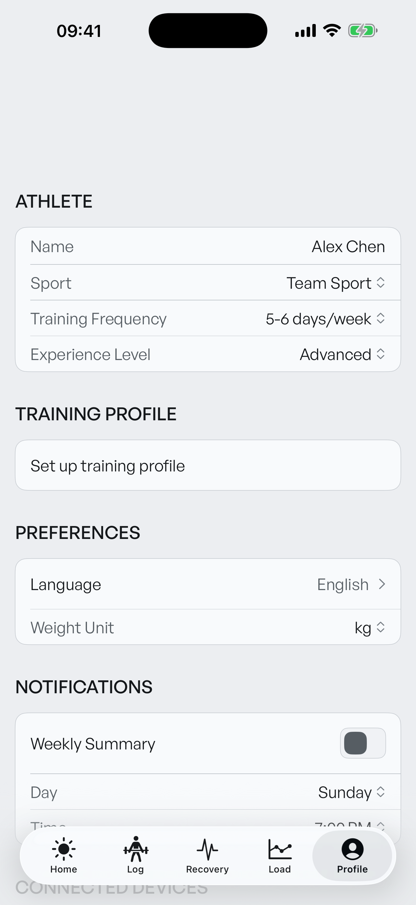
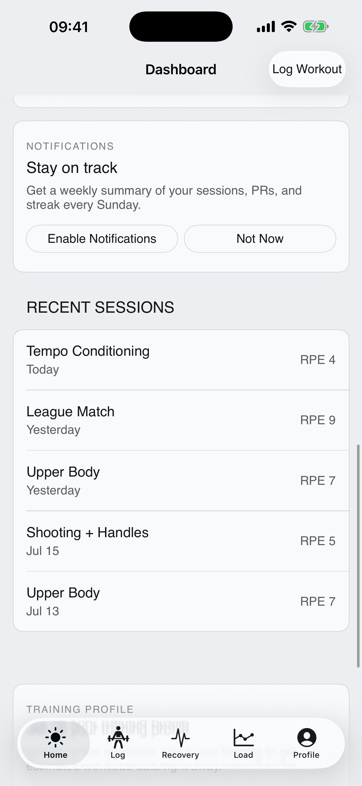
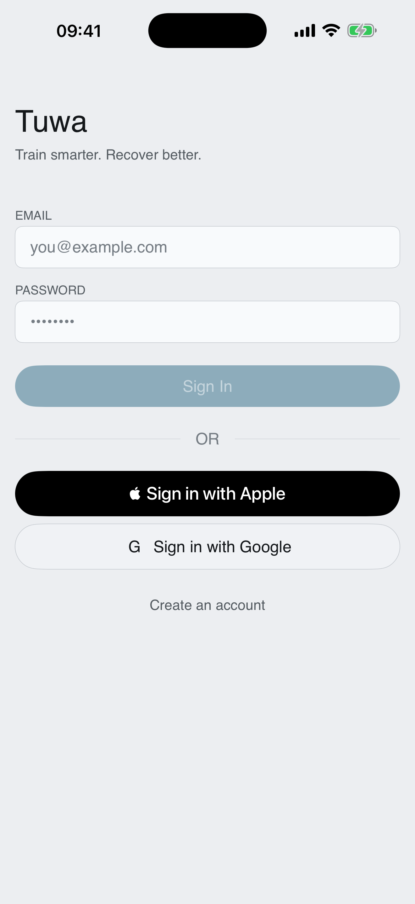
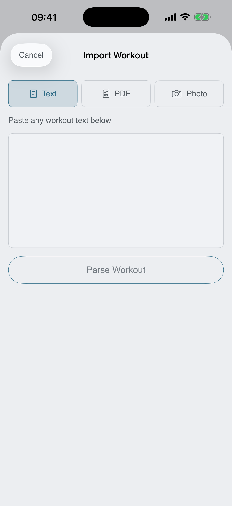
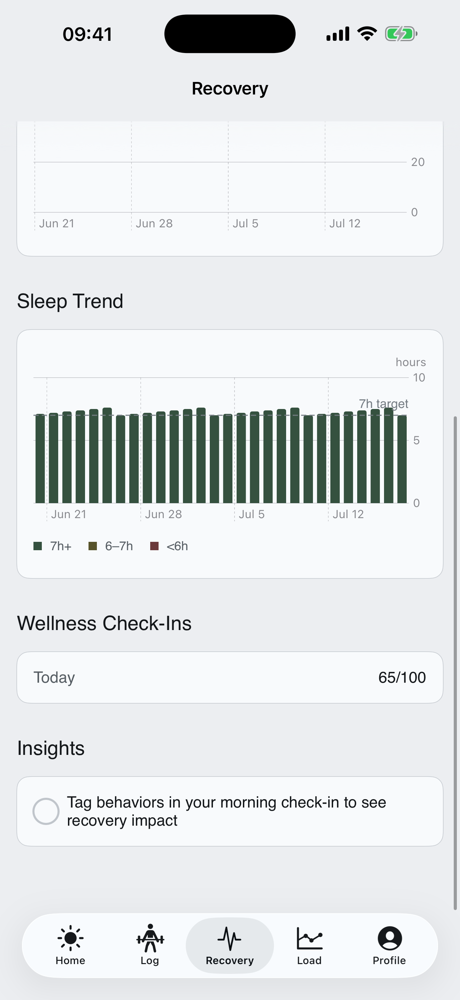

2026-07-17 · per-screen craft landed + a font bug that mattered more than everything else
| Done | Resumed Stage 3 after the Jul-14 credit outage. Converted the four attention banners (PR / spike / fatigue / cycle) inline onto a new shared attentionBannerStyle — one rounded card grammar with a 2pt zone-colored leading rule, replacing four hand-rolled square scaffolds. |
| Done | Dispatched the Stage 3 lane agent for the rest: 54 files swept — every import/share/export/profile/onboarding/upgrade surface off square residue onto CornerTokens; Dashboard hero rebuilt (score owns its space, periodization demoted to a compact inline-ring row); recent sessions grouped on one plate; Auth screens onto field + pill grammar; section rhythm normalized; -- → —. |
| Verified | I reviewed the diff and screenshots myself: xcstrings edit is value-only, AppShell untouched, verdict-card nocebo guard intact (comment-only diff). Unit gate: 766 tests — 764 passed / 0 failed / 2 skipped. Committed as 951537b. |
| Found | The instrument voice was never rendering. A deferral note from the agent led me to launch the app plain-DEBUG — it trapped on the font assertion. Root cause: GeneralSans-Variable.ttf declares no instance PostScript names, so the names the code requested (GeneralSans-Regular/-Medium) never existed — since the phase-14 font switch, all body type silently fell back to the system font. Every screenshot we ever approved showed the fallback. |
| Fixed | FontTokens.cascaded now resolves the one truly registered face (GeneralSansVariable-Bold) and pins the wght axis to 400/500 — the exact pattern Stage 0 used for the serif's opsz. Assert list corrected (+ Source Serif added to it), diagnostic family dump added. Plain-DEBUG launch now passes; General Sans renders for the first time. Gate: 766 tests — 764 passed / 0 failed / 2 skipped. (First run caught one thing: I'd named the serif in WorkloadApp.swift's assert list and the Two-Voice fence rejected it — the names now live in the FontTokens chokepoint and the assert consumes them. The fences police me too.) |









The grammar is finally coherent — but two tabs still read like an instrument panel that hasn't earned its calm.
36747b8 | Stage R — SwiftUI tree rehosted as the live app |
bdbee4f | Stage 0 — DESIGN.md v3 law, CornerTokens, serif bundle, fences |
0a3c95b | Stage 1 — shared layer adoption: serif hero, pills, halftone |
842a8af | Stage 2 — motion pass: calm grammar, count-up, reduce-motion |
951537b | Stage 3 — per-screen craft (this session) |
| next | Font-fix commit (pending green gate) → Stage 4: ScreenshotTests rewrite, /codex cross-review of the full v1.6 diff, your on-device dogfood, version bump to 1.6, then shell deletion. |
Generated by the v1.6 orchestrator session · screenshots are live sim captures (iPhone 17 Pro Max, SCREENSHOT_MODE seed data) · report lives at .planning/orchestration/2026-07-17-stage3-report.html